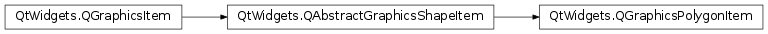

QGraphicsPolygonItem¶
Synopsis¶
Functions¶
- def
fillRule() - def
polygon() - def
setFillRule(rule) - def
setPolygon(polygon)
Detailed Description¶
The
PySide2.QtWidgets.QGraphicsPolygonItemclass provides a polygon item that you can add to aPySide2.QtWidgets.QGraphicsScene.To set the item’s polygon, pass a
PySide2.QtGui.QPolygonFtoPySide2.QtWidgets.QGraphicsPolygonItem‘s constructor, or call thePySide2.QtWidgets.QGraphicsPolygonItem.setPolygon()function. ThePySide2.QtWidgets.QGraphicsPolygonItem.polygon()function returns the current polygon.
PySide2.QtWidgets.QGraphicsPolygonItemuses the polygon and the pen width to provide a reasonable implementation ofPySide2.QtWidgets.QGraphicsPolygonItem.boundingRect(),PySide2.QtWidgets.QGraphicsPolygonItem.shape(), andPySide2.QtWidgets.QGraphicsPolygonItem.contains(). ThePySide2.QtWidgets.QGraphicsPolygonItem.paint()function draws the polygon using the item’s associated pen and brush, which you can set by calling thePySide2.QtWidgets.QAbstractGraphicsShapeItem.setPen()andPySide2.QtWidgets.QAbstractGraphicsShapeItem.setBrush()functions.
-
class
PySide2.QtWidgets.QGraphicsPolygonItem([parent=nullptr])¶ -
class
PySide2.QtWidgets.QGraphicsPolygonItem(polygon[, parent=nullptr]) Parameters: - polygon –
PySide2.QtGui.QPolygonF - parent –
PySide2.QtWidgets.QGraphicsItem
Constructs a
PySide2.QtWidgets.QGraphicsPolygonItem.parentis passed toPySide2.QtWidgets.QAbstractGraphicsShapeItem‘s constructor.See also
Constructs a
PySide2.QtWidgets.QGraphicsPolygonItemwithpolygonas the default polygon.parentis passed toPySide2.QtWidgets.QAbstractGraphicsShapeItem‘s constructor.See also
- polygon –
-
PySide2.QtWidgets.QGraphicsPolygonItem.fillRule()¶ Return type: PySide2.QtCore.Qt.FillRuleReturns the fill rule of the polygon. The default fill rule is
Qt.OddEvenFill.See also
PySide2.QtWidgets.QGraphicsPolygonItem.setFillRule()QPainterPath.fillRule()QPainter.drawPolygon()
-
PySide2.QtWidgets.QGraphicsPolygonItem.polygon()¶ Return type: PySide2.QtGui.QPolygonFReturns the item’s polygon, or an empty polygon if no polygon has been set.
-
PySide2.QtWidgets.QGraphicsPolygonItem.setFillRule(rule)¶ Parameters: rule – PySide2.QtCore.Qt.FillRuleSets the fill rule of the polygon to
rule. The default fill rule isQt.OddEvenFill.See also
PySide2.QtWidgets.QGraphicsPolygonItem.fillRule()QPainterPath.fillRule()QPainter.drawPolygon()
-
PySide2.QtWidgets.QGraphicsPolygonItem.setPolygon(polygon)¶ Parameters: polygon – PySide2.QtGui.QPolygonFSets the item’s polygon to be the given
polygon.
© 2018 The Qt Company Ltd. Documentation contributions included herein are the copyrights of their respective owners. The documentation provided herein is licensed under the terms of the GNU Free Documentation License version 1.3 as published by the Free Software Foundation. Qt and respective logos are trademarks of The Qt Company Ltd. in Finland and/or other countries worldwide. All other trademarks are property of their respective owners.